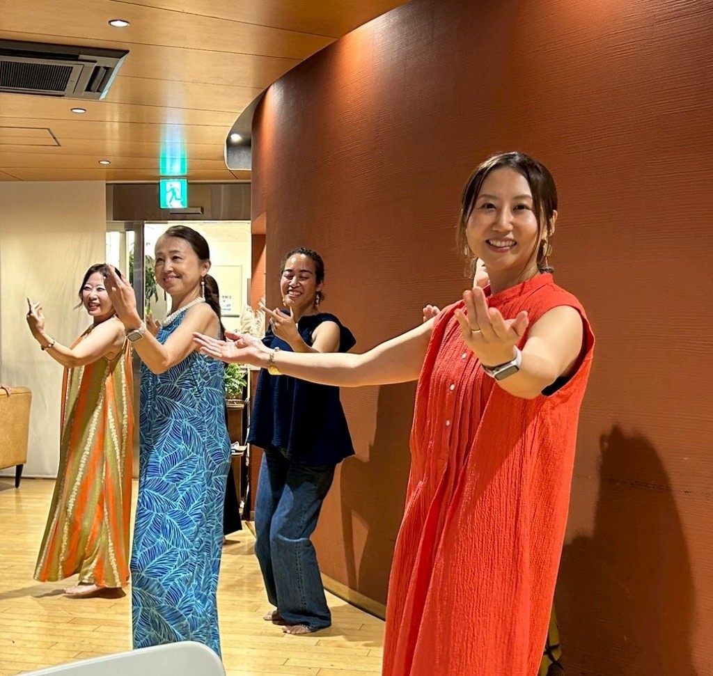
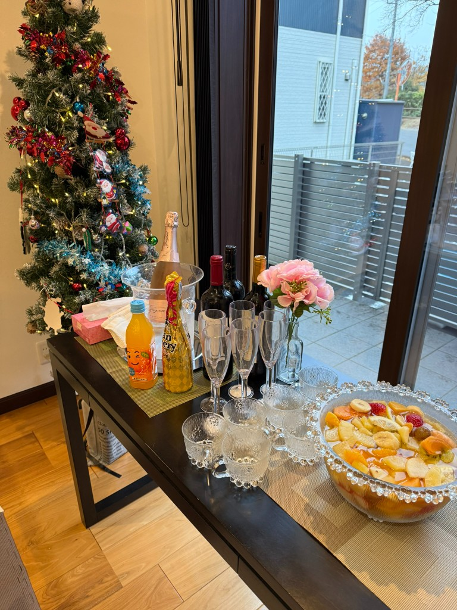
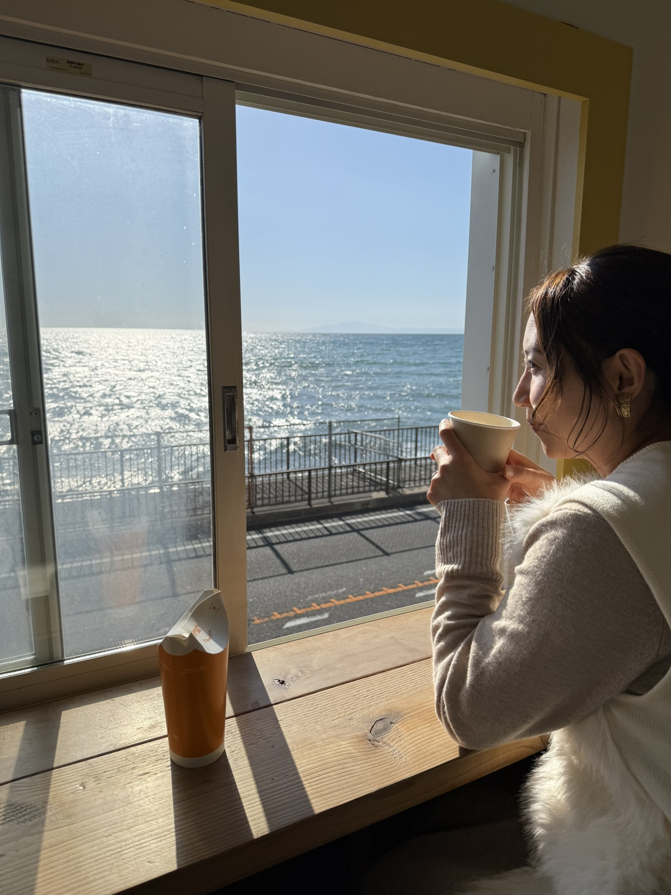
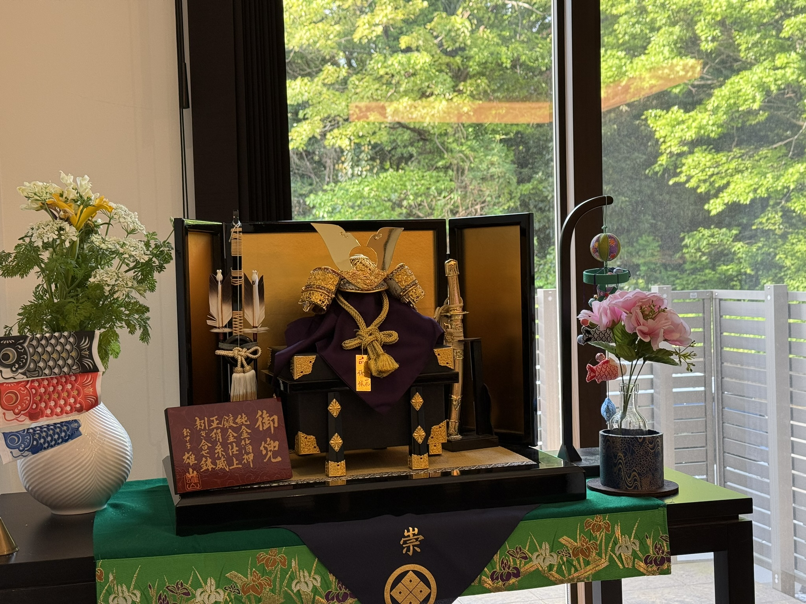
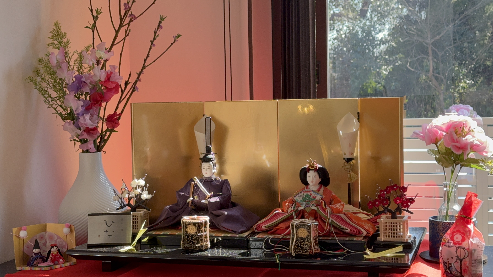
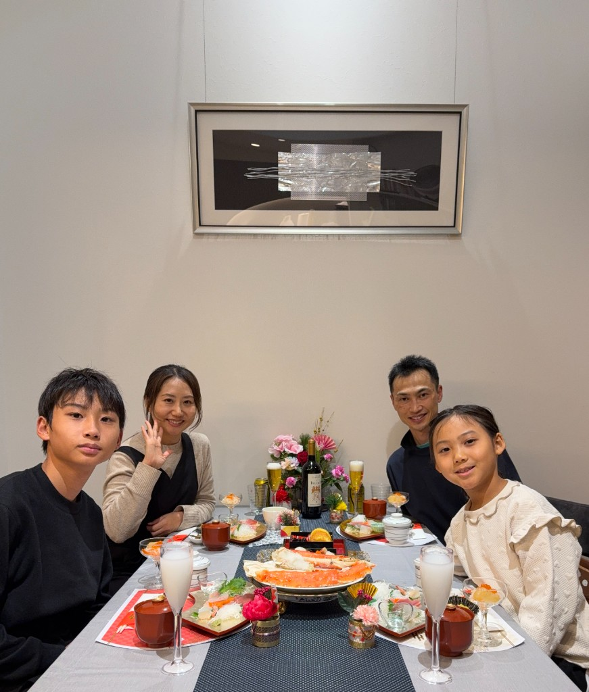
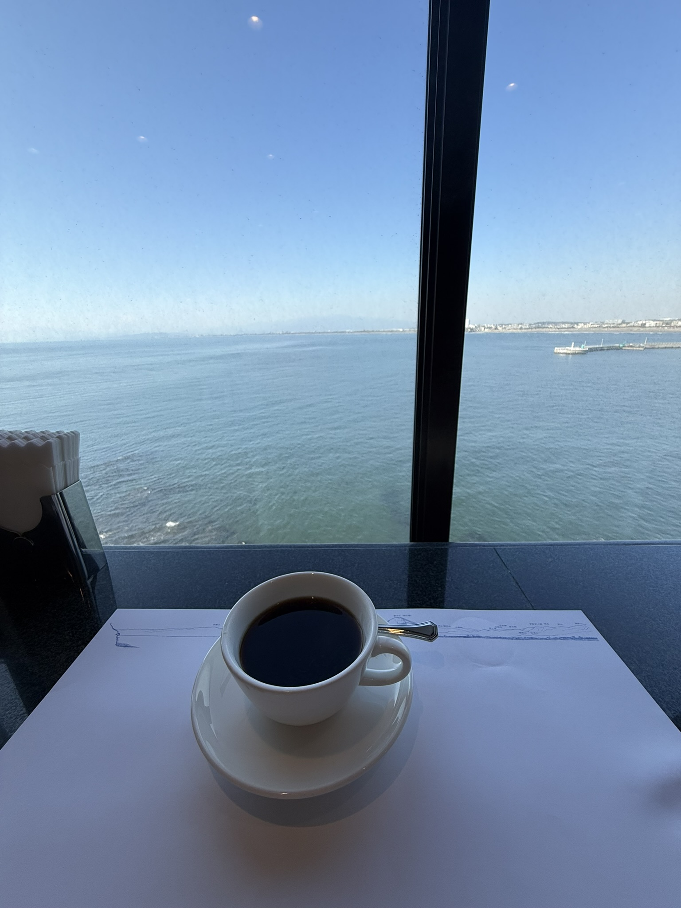
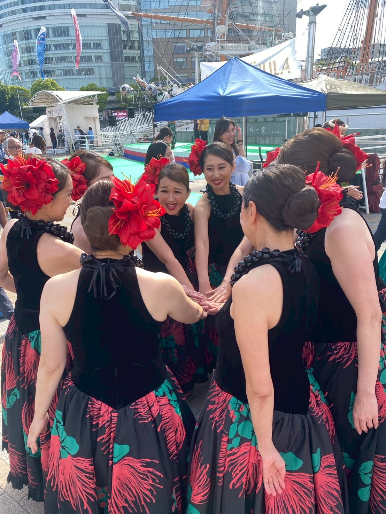
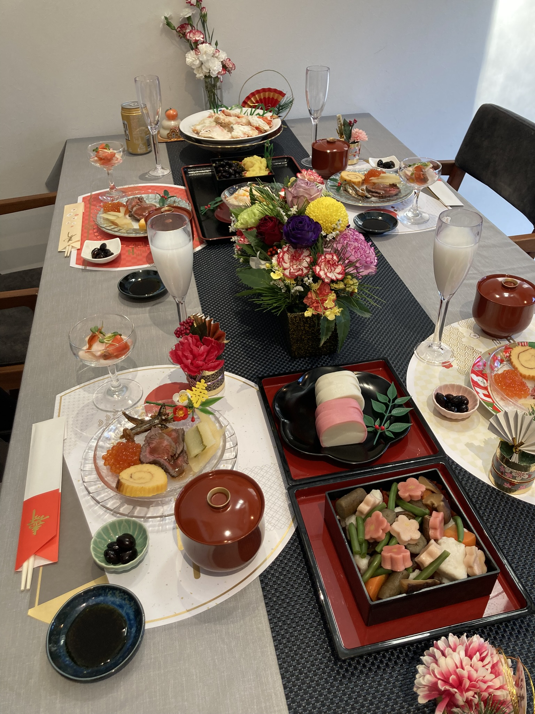
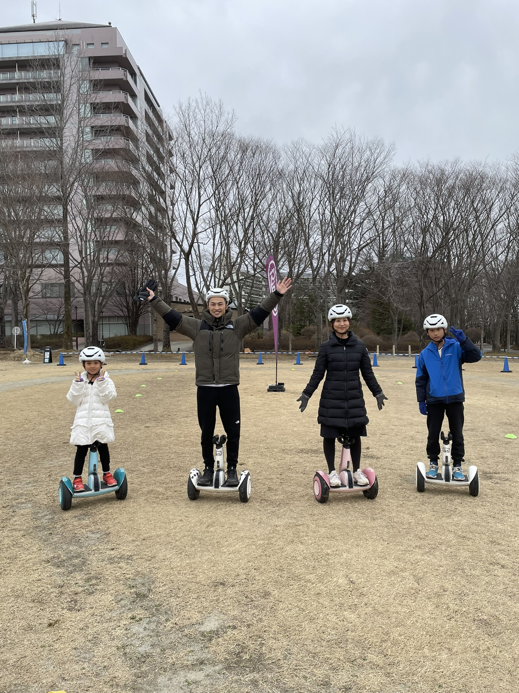

暮らしを整え、新しい私へ。心地よさと仕事の両立を目指して。
20年間の会社員生活を卒業しました。今は、家族との時間や 日々の小さな変化を大切にしながら、わたしらしい 「柔軟な働き方」という新しいステージへ向かっています。
「会社員時代には気づけなかった"今を感じる感覚"と、家庭の中の小さな変化に気づく"心の余白"が生まれています。」






— 日々の彩り —




「今を丁寧に味わう」暮らしを整え、心地よさとバランスを大切にする生き方
化粧品メーカーでの会社員生活で得たさまざまな経験。家族のために立ち止まって気づいた、暮らしの豊かさ。そのふたつが今、AIと出会って動き出しています。難しく考えすぎず、暮らしの中でAIを使いこなす。それが私なりの「自分らしい働き方」への第一歩です。
大きな挑戦。でも、AIという未知の領域に対するワクワク感を何より大切に。
新しい知識を吸収し、自分らしい「柔軟な働き方」の可能性を広げる。
過去の「会社員時代のわたし」とは違う、アップデートされた自分へ。
しっかり収入を得られる自分へと成長し、心地よい暮らしと仕事を両立させる。